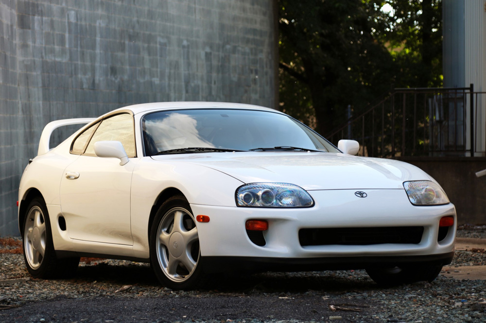

Considerados por muitos como os melhores e mais marcantes esportivos japoneses de todos os tempos, o Nissan Skyline e o Toyota Supra formam uma das mais famosas rivalidades na história dos carros. Pouco tempo depois de introduzidos, ambos rapidamente caíram nas graças dos fãs de carros em todo o mundo. Somando o fato de estarem presentes em diversos filmes e jogos consumidos por muitos na infância/adolescência, eles acabaram se tornando objetos de desejo de muitos aficcionados, elevando sua procura e valorização ao extremo.
Os dois carros nasceram bem cedo, com o Skyline tendo sua primeira versão em 1957 e o Supra em 1978, mas foi na década de 1990 que sua rivalidade alcançou um novo patamar com o lançamento do Skyline R34 e do Supra MK IV. Os dois traziam desempenho excepcional, design muito marcante e aceitavam uma grande variedade de modificações diferentes sem dificuldade.
Começando pela história do Nissan, a sua primeira geração não era esportiva, mas sim um sedã de luxo para o mercado japonês. A montadora criou em 1967 o Skyline GT, que foi a primeira versão esportiva do modelo. O sucesso veio rápido e já começou a estabelecer sua reputação logo ali. Ao longo das décadas, a Nissan continou a aprimorá-lo e criou a famosa linha GT-R em 1969, com tração nas quatro rodas. O Skyline GT-R também teve um sucesso significativo em corridas, consolidando ainda mais sua reputação com o passar dos anos. O modelo mais famoso se tornou o R34, décima geração, lançado em 1998. O Skyline R34 possuía diferentes versões, seja com câmbio automático ou manual, incluindo algumas bem peculiares e que não lembravam muito sua esportividade e imponência, como uma versão 4 portas com motor aspirado e uma versão station wagon (perua), chamada Stagea. A primeira versão esportiva do R34 era a GTT, com parachoques e saias laterais maiores que os da versão "civilizada", um aerofólio traseiro e o motor RB25 DET de 6 cilindros em linha, com capacidade de 2,5 litros, um turbo e tração traseira.

A mais desejada, no entanto, é a GT-R, que vinha com o motor RB26 DETT, o mesmo da GTT, mas agora com a capacidade levemente maior (2,6 litros), dois turbos sequenciais e tração nas quatro rodas, proveniente de um sistema chamado ATTESA, fazendo um 0-100 em 5,2 segundos, o que era extremamente rápido na época. Por limitações impostas pelo governo japonês, o máximo de potência permitida era 280 cavalos, que era o divulgado pela Nissan, mas alguns dizem que o GT-R saía de fábrica com mais que isso. Vale lembrar que a versão GT-R também possuía algumas subversões, como a GT-R V-Spec, M-Spec e Z-Tune, sendo a última uma modificação extrema do GT-R para entregar mais de 500 cavalos, feita pela Nismo, a divisão de corridas da Nissan. Bem preparado, é capaz (assim como o Supra) de vencer diversos carros modernos, e assim ficou conhecido como Godzilla.

Já o Toyota, por sua vez, nasceu em 1978 como uma versão mais potente do modelo Celica. Ao longo dos anos, a Toyota trouxe novas versões dele, cada vez mais potentes e capazes, culminando no Supra MK IV ou A80, a quarta geração, que foi lançada em 1993. Ao contrário do Skyline, o Supra possía poucas versões e nunca possuiu uma de 4 portas ou perua, sendo todas cupês de 2 portas. Ele possuía o motor 2JZ, criado a partir de melhorias do 1JZ que equipava a geração anterior. Ambos eram de 6 cilindros em linha, mas o 1JZ tinha 2,5 litros de capacidade e o 2JZ veio como um 3,0 nas versões GE e GTE, sendo a primeira aspirada e a segunda com dois turbos sequenciais, sempre com tração traseira. Ele poderia vir equipado com câmbio automático ou manual tanto com o 2JZ-GE quanto com o 2JZ-GTE, fazendo um 0-100 km/h em absurdos 4,6 segundos com o motor biturbo. Sua potência divulgada também era de 280 cavalos, mas assim como acontecia com o rival, é dito que ele saía de fábrica com mais. Nos modelos que seriam exportados, a Toyota fez algumas melhorias, como upgrades nos turbos e bicos injetores maiores, elevando sua potência para 330 cavalos.
Apesar de não ter tantas versões como o rival, o 2JZ-GTE, que vinha com peças forjadas de fábrica, era extremamente amigável com as oficinas de preparação, permitindo dobrar a potência original sem problemas, e é aí que ele definitivamente fazia jus ao seu nome Supra, que no latim significa "ultrapasar", "acima" ou "vá além". Em algumas dessas oficinas, o Supra recebeu preparações notáveis que criaram verdadeiros monstros, sendo os mais famosos provavelmente o Supra GT-300 e o Supra V12, criados pela oficina Top Secret de Smokey Nagata, um corredor muito famoso na época. Um fato interessante é que alguns Supras eram targa (uma espécie de conversível), com o teto podendo ser retirado manualmente e guardado no porta-malas, proporcionando uma sensação diferente e interessante em viagens longas.

No começo do novo milênio, a fama dos carros se tornou internacional. O esportivo da Toyota fez uma aparição no filme Velozes e Furiosos, de 2001, na cor laranja, usado pelo policial disfarçado Brian O'Conner. No segundo e quarto filmes, de 2003 e 2009, respectivamente, o Nissan foi retratado, e novamente como o veículo de Brian, sendo prata no segundo filme e azul no quarto. Em 2015, no sétimo filme da franquia, foi a vez do Supra retornar para finalizar a produção com uma cena muito marcante de despedida de Paul Walker, o ator no papel de Brian, que havia falecido em 2013.
Hoje, depois de tudo que representaram e continuam representando, Nissan Skyline e Toyota Supra podem se considerar duas grandes lendas, enternizadas para sempre na cultura automotiva mundial.
Texto criado com ajuda do ChatGPT com algumas leves correções e meus conhecimentos próprios.